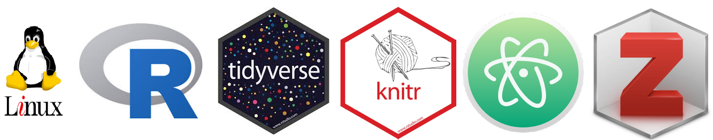

“Notas sobre los resultados de Chile en la última prueba internacional de formación ciudadana”, con Daniel Miranda en CIPER (Diciembre 2017).
“La meritocracia, ¿una tragedia?”, en El Mostrador (Diciembre 2017).
Comentario al libro Desiguales (Larrañaga, Cociña & Frei, PNUD 2017), en seminario COES-PNUD, Octubre 2017.
“CASEN y Cohesión: oportunidades y precauciones”, con Mauro Basaure en El Mostrador (Septiembre 2016).
“La nueva Casen y las exigencias a la política social en Chile”, con Mauro Basaure en El Dínamo (Octubre 2016).
“Selección en particulares y la complicidad de los psicólogos” en El Mostrador (Enero 2015).
“De la educación cívica a la educación para la ciudadanía”, en El Mostrador (Septiembre 2014)
I use software compatible with the principles of open science, this is, free and open source.

My operating system is Linux, I use Ubuntu with Gnome-Cairo Dock. A lot of freedom for customization … and looks great.
For general statistical analysis and reporting I work in R, using packages for data science from Tidyverse.
For more specific analysis: I use lme4 for multilevel models and Lavaan for SEM.
I also use R’s reproducibility tools as Knitr & Rmarkdown … before I used to be a fan of LaTeX, but the simplicity and efficiency of Markdown seems unbeatable, even for presentations with tools such as remark & Xaringan .
For writing (and almost for everything so far) I use Atom editor. Just great, and smooth with Git/Github.
Here a good introduction to version control with (plain) Git from: Blischack & Wilson, 2016